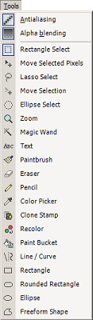
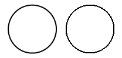
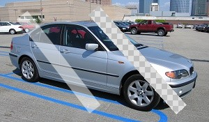

Tools Menu
This menu gives you a second method of selecting from the tools that are available in the Tools Window. It also gives you access to two options that control how many of the tools draw on to the canvas.

-
Antialiasing
This is on by default, and allows all the tools to draw with smooth edges.
In this image, the circle on the left has been drawn with antialiasing enabled. The circle on the right was drawn with it disabled:

-
Alpha blending
When you choose a color, you may specify an Alpha component. This part of the color determines how to blend it in with the pixels that are already on the layer when you draw. An alpha value of 0 means completely transparent, whereas an alpha value of 255 means completely opaque. Antialiasing also uses alpha blending for the edges of shapes and brushes.
However, there are times when you do not want to blend a color in to the existing pixels, and instead want to replace the color on the canvas with exactly the color and alpha values you have specified.
In the image below, the white line on the left was drawn with alpha blending enabled. The white line on the right was drawn with alpha blending disabled, and you can see the transparency checkerboard showing through. Both were drawn with an alpha value of 128.

Copyright © 2006
Rick Brewster, Tom
Jackson, and past contributors. Portions Copyright
© 2006 Microsoft Corporation. All Rights Reserved.